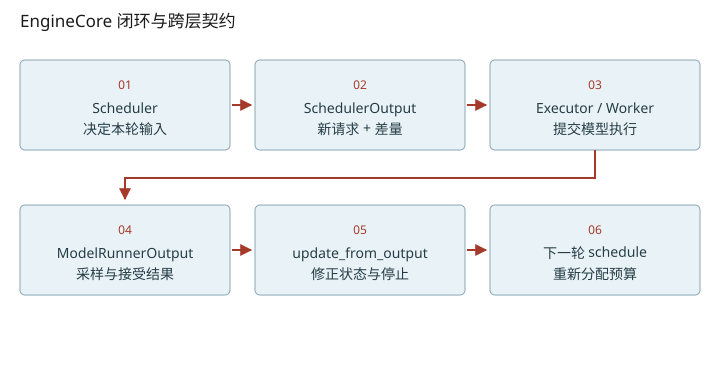
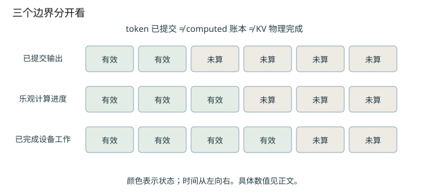

深入篇 27 / vLLM V1 运行时细节 · 2026-11-08
vLLM 调度账本：预算、在途工作与投机回退
正确计算一次混合调度的token预算，并在拒绝draft后修正computed计数。
正确计算一次混合调度的token预算，并在拒绝draft后修正computed计数。

同一个队列不代表同一种计算
vLLM固定提交中，running先获得预算，再考虑waiting。running也可能是尚未完成的chunked prefill。它用“还有多少位置需要追赶”统一普通prefill、decode和投机输入，而不是说系统完全没有阶段差异或特殊分支。
本轮分配 ≤ min(需求, token_budget, input_budget − draft_slots)
另受长prefill阈值、模型长度、KV与模型专属对齐约束
num_tokens是prompt加已提交输出；num_tokens_with_spec还包括草稿。num_computed_tokens是调度账本，异步时包含已排出但设备尚未完成的工作，不能永远翻译成“已经计算完”。token_budget与input_budget也不同：后者还为下一步drafting预留draft_slots；这个预留不等于本轮被验证的draft数。
普通混合调度手算
假设无spec、无在途、KV充足，两个预算均8：A是running，N=10/C=9，需1；B也是running但仍在prefill，N=10/C=4，需6；C是waiting prompt=5，得到剩余1。总分配[1,6,1]。计划排出后computed成为[10,10,1]；A/B可各提交一个输出，C尚未完成prompt不能提交。C的存在说明“本轮计算8个token”不等于“本轮生成8个token”。
投机例子：4已经包含3个draft
一个请求原N=11、C=10，另有3个draft，需求=(11+3)−10=4：上轮最后token加3个草稿位置。乐观C=14。若实际接受1个draft，再采样1个新token，本轮输出长度2；拒绝2个draft，C回退到12，N变13。新的最后token仍需后续前向建立KV。不要把4当成“4个普通token外加3个draft”。
读跨进程结构比背调用栈更有效
SchedulerOutput标明新请求数据、已有请求差量、每请求num_scheduled_tokens及scheduled_spec_decode_tokens；output update负责取消、停止、被拒绝draft和缓存状态。练习先画清这些字段的生产者/消费者，再深入async scheduler。这里讲固定commit；更多模型后端可能额外引入encoder、Mamba或多模态预算。

改变变量，验证直觉
启用 JavaScript 后可交互；上面的图和下面的手算练习始终可读。
数值练习：先算，再核对
用N=11/C=10/draft=3、accepted=1重算一遍状态；将accepted改成0和3，检查每种情况下N−C是否保持1（假设无EOS、无其它在途工作）。
闭卷检索
不要回看正文。答错后先解释原因，再重新打开这一课。
把结论落到源码
- 在scheduler的num_new_tokens公式标出placeholder、spec与input预算各自角色。
- 在_update_after_schedule与update_from_output之间画出computed先增后减的路径。
以下行号由本地 vendor 文件生成；上游链接固定完整 commit，离线摘录可直接打开。
- vllm-engine-step：vllm/v1/engine/core.py L710–740 · 上游证据
- vllm-budget：vllm/v1/core/sched/scheduler.py L800–871 · 上游证据
- vllm-allocation：vllm/v1/core/sched/scheduler.py L922–1028 · 上游证据
- vllm-advance：vllm/v1/core/sched/scheduler.py L1888–1907 · 上游证据
- vllm-output：vllm/v1/core/sched/scheduler.py L2349–2458 · 上游证据
- vllm-contract：vllm/v1/core/sched/output.py L245–279 · 上游证据
- vllm-request：vllm/v1/request.py L165–186 · 上游证据
优先阅读：固定源码 Scheduler预算 与 输出更新。
速查：形状与公式 · 三框架映射 · 术语表 · 复习与实战路线 · 4070 Ti本地实验
只在当前浏览器保存自评；不会自动写成已掌握的 learning record。